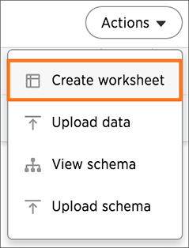
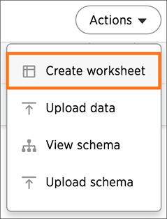

Create a search from a view
last_updated: 11/1/2018 summary: "After creating a view, you can select it and search its data." sidebar: mydoc_sidebar permalink: /:collection/:path.html — After creating a view and linking it to related data, you’re ready to create your new search. To do a search on the view, along with any data sources you linked:
-
Click the search icon, and select Data Source. Choose your linked sources.

-
Do a search using columns from the linked sources.
-
Test the result, to make sure it’s what you expect.
If your search shows no data found or doesn’t look right to you, it is possible that one of the links between your sources was made on the incorrect column. Check the relationships you created and try linking using a different column, to see if that gives the expected search results.
-
When you have the expected answer, you can create a worksheet to make it easier for you and other people to use. To do this, click Data.
-
Click the ellipses icon
 , and select Create worksheet.
, and select Create worksheet. -
Choose your view and any other tables it is linked to using Choose Sources.
-
You may need to rename some columns appropriately for searching.
-
Save the worksheet and share it with the appropriate users and groups.